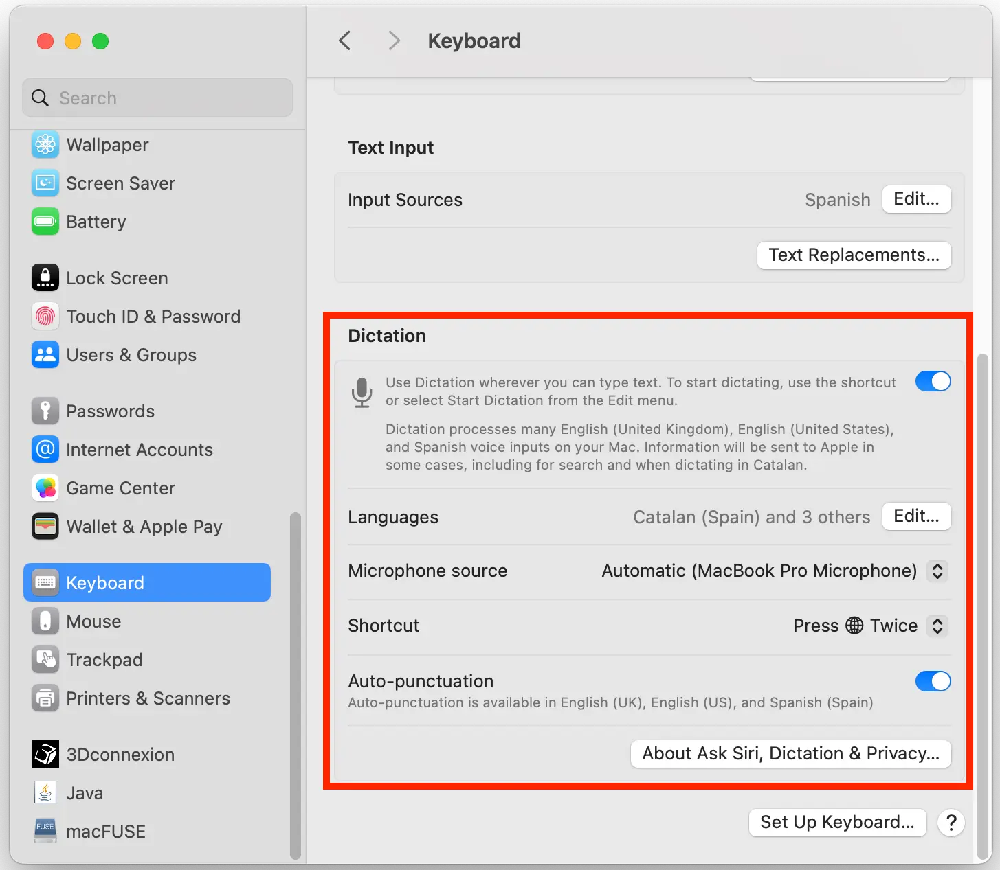

Woche 1. Prinzipien und Praktiken, Projektmanagement
Zurück zur Fab Academy 2024. Fran Sanchez
| Aufgabe A: |
| Plane und skizziere ein potenzielles Abschlussprojekt. |
| Aufgabe B: |
| Erstelle ein Schritt-für-Schritt-Tutorial für Git. |
| Baue eine persönliche Website im Klassenrepository, die dich und dein Abschlussprojekt beschreibt. |
Mein Umfeld
macOS wieder? Wie konnte ich nur so tief sinken?
Mal sehen, wie ich das erkläre… Am besten erkläre ich es in einem VideoBald auf Youtube oder Instagram.
.
Meine Tastatur ist komisch
Als ich an der Organisation von Fab15 in Ägypten arbeitete, fiel mir auf, dass Sherry Lassiter in voller Geschwindigkeit tippen kann, ohne auf die Tastatur zu schauen. Zu der Zeit tippte ich mit 2 Fingern und schaute immer auf die Tastatur. Also beschloss ich, es zu lernen. Wenn du von Grund auf etwas Neues lernst, hast du den Vorteil, dass du keine schlechten Angewohnheiten hast. Also lernte ich nicht das QWERTY-System, das ursprünglich entworfen wurde, um zu verhindern, dass die alten Schreibmaschinen stecken bleiben. Ich lernte mit dem ColemakColemak ist so designed, dass die am häufigsten verwendeten Buchstaben im Englischen in der mittleren Reihe liegen.
-System. Ich habe eine ortho-lineare Tastatur mit Colemak-Anordnung, und ich übe etwa fünf Minuten pro Tag.

Ich habe auch eine Software auf macOS, die meine Tastaturanordnung zu Colemak ändert und zusätzlich die Funktion der UmschalttasteIch habe sie eigentlich nur benutzt, um zu fluchen
in eine Rückwärtstaste ändert.
Mein Texteditor ist auch komisch
Mein Ziel ist es, ausschließlich vim zu verwenden, einen Texteditor für die Kommandozeile. Ich habe einige Grundkenntnisse in vim und möchte meine Fähigkeiten darin vertiefen. Mir gefällt die Idee, nur die Tastatur für das Textediting zu verwenden. Um der Versuchung zu widerstehen, Visual Studio Code zu verwenden, habe ich es deinstalliertDas ist gelogen, ich habe nur die Verknüpfung entfernt.
. Der Texteditor vim ist von Haus aus ziemlich spartanisch. Deshalb habe ich einige Plugins installiert. Hier ist eine Liste, die ich mit der Zeit erweitern werde:
- → NERDTree um eine Seitenleiste mit einer Dateiliste zu haben, sodass ich schnell zwischen Dateien navigieren kann.
- → vim-devicons um Dateien und Ordner mit einem kleinen grafischen Symbol anzuzeigen.
Weitere nützliche Links:
- → VimAwesome ist eine Seite mit Hunderten vim-Plugins
- → Frans My Computing Repo mit einigen Tricks, falls du gerne0,01% der Bevölkerung
die Kommandozeile verwendest.
Das Rad neu erfinden
Ich habe nicht viel Freizeit. Also muss ich ein System erfinden, um die Dokumentation schnell und effizient schreiben zu können. Als unerwarteten Bonus ermöglicht dir dieses System, die Dokumentation in zwei (oder mehr) Sprachen zu haben.
Markdown nutzen
Hier will ich nicht allzu innovativ sein. Die Strategie, die mir schon seit vielen Jahren sehr gut dient, ist das Schreiben von Inhalten in einer einfachen Textdatei im Format namens Markdown .md. So konzentriere ich mich ausschließlich auf das Schreiben des Inhalts. Vorteile des Schreibens in Markdown:
- Du benötigst kein spezielles Programm, um einfachen Text zu schreiben. Du könntest ihn sogar per Hand schreiben, wenn du eine gute Handschrift hast, und ihn später scannen.
- Es ist einfach zu schreiben, du musst dir nicht die Finger verrenken, indem du
</h1>und so weiter tippst. - Es ist einfach, Stile anzuwenden und den Text zu organisieren.
- Es lässt sich lesen, ohne dass es so aussieht, als würdest du die Matrix entschlüsseln.

Die Dokumentation der Fab Academy muss in Form einer Webseite präsentiert werden. Es gibt ein Programm für die Befehlszeile namens Pandoc, das buchstäblich jeden Textformat umwandeln kann. Ich werde es benutzen, um die .md-Dateien in ansehnlicheAnsehnlich bezieht sich hier auf die Lesbarkeit. Andere Menschen legen vor allem Wert auf das visuelle Erscheinungsbild der Seite und verbringen gerne Zeit damit, ihr eigenes Kunstwerk zu erstellen. Meine besten Wünsche für sie.
.html-Seiten mit einem CSS-Style-Template umzuwandeln. Das Template hat zwei Vorteile. Zum einen erlaubt es mir, mich nicht um das visuelle Erscheinungsbild der Seite kümmern zu müssen. Zum anderen erlaubt es mir, leicht Funktionen wie Gleichungen, Tabellen, Zeilennummern im Code, Randnotizen usw. hinzuzufügen.
Das Template, das ich verwendet habe, nennt sich Tufte CSS.Stark inspiriert vom visuellen Stil der Bücher von Edward R. Tufte.
Ich habe das Template angepasst, weil es nicht vollständig für mehrere Sprachen gedacht war.
$if(toc)$
<nav id="$idprefix$TOC" role="doc-toc">
$if(return-url)$
<a href="$return-url$">$if(return-text)$$return-text$$else$← Return$endif$</a><br>
$endif$
<strong>Contents</strong><label for="contents">⊕</label>
<input type="checkbox" id="contents">
$table-of-contents$
</nav>
$endif$In Zeile 6 war das Wort Index als Contents fest eingebettet. Jetzt stammt das Wort aus der Variable toc-title im Header:
$if(toc)$
<nav id="$idprefix$TOC" role="doc-toc">
$if(return-url)$
<a href="$return-url$">$if(return-text)$$return-text$$else$← Return$endif$</a><br>
$endif$
<strong>$if(toc-title)$
$toc-title$
$else$
Contents
$endif$</strong><label for="contents">⊕</label>
<input type="checkbox" id="contents">
$table-of-contents$
</nav>
$endif$Zeit sparen durch Diktieren
Der größte Teil des Textes, den du liest, wird auf SpanischDer Grund, warum ich es nicht direkt auf Englisch diktiere, ist, dass mein Akzent so schrecklich ist, dass mich der Computer nicht versteht.
in einer Markdown-Datei diktiert. Zum Diktieren verwende ich das Diktierwerkzeug von macOS.

Ich mag dieses Werkzeug wirklich sehr, weil:
- Es überall im Betriebssystem funktioniert, einschließlich des Terminals.
- Es dir erlaubt zu sprechen und Pausen von bis zu 30 Sekunden zu machen, ohne dass die Verbindung getrennt wird.
- Du den Text bearbeiten kannst, während du diktierst.
- Du Emojis hinzuf√ºgen kannst üòä
- Es automatisch Satzzeichen hinzufügt, und du kannst sie auch manuell einfügen.
- Du auch mit deiner Stimme die Zeile und den Absatz wechseln kannst.
- Wenn dein Prozessor Apple Silicon ist, versteht es den Kontext und korrigiert sich selbst. All das offline.
- Ich es nutzen kann, während ich Musik über meine Kopfhörer höre.
Hier ist die komplette Liste der Sprachbefehle auf Spanisch, Englisch und Deutsch. Das spart mir einiges an Zeit beim Schreiben. Einige Teile muss ich manuell schreiben, zum Beispiel, wenn ich Code schreibe oder Links einfüge. Auch muss ich manchmal manuell korrigieren.
Dateistruktur
Am Anfang schrieb ich den Text jeder Woche in einer einzigen Datei. Aber wie du später noch lesen wirst, verwende ich einen kostenpflichtigen Service für die Übersetzung. Jedes Mal, wenn ich eine Zeile bearbeitete, musste ich die ganze Datei erneut übersetzen lassen. Um die Kosten zu begrenzen, habe ich die Woche in KapitelMeine Dateistruktur ist inspiriert von der Programmiersprache BASIC
aufgeteilt und erstelle eine Datei für jedes Kapitel. So müssen nur die Kapitel, die ich geändert habe, übersetzt werden.
/documentation
/es
/md
/w01
w01-chapter-00.md
w01-chapter-10.md
w01-chapter-20.md
w01-chapter-21.md
...
w01-chapter-90.mdDer Dateiname codiert sowohl die Woche, in der ich mich befinde, als auch das Kapitel. Kapitel 00 ist die Einleitung. Ich verwende die Kapitel 10, 20, 30… um die Abschnitte der Woche zu entwickeln. Wenn ein Kapitel sehr lang ist, teile ich es mit den Zwischennummern auf: 20, 21, 22, etc. Kapitel 90 ist immer das Fazit.
Anschließend füge ichWichtiger Hinweis: Ich bearbeite niemals manuell die zusammengefügte Datei. Ich bearbeite nur die einzelnen Kapitel.
alle Kapitel der Woche in einer einzigen Datei zusammen, in diesem Fall w01.md.
KI-gestützte automatische Übersetzungen
Im Fab Academy muss die Dokumentation auf Englisch sein. Traditionelle Sprachübersetzer sind ziemlich schlecht. Sie können den Kontext nicht verstehen und erzeugen Ergebnisse, die unnatürlich klingen. Ich werde eine künstliche Intelligenz nutzen, um den Text der Kapitel ins Englische und auch ins Deutsche zu übersetzen.
Das KI-Modell muss in der Lage sein, die Syntax von Markdown zu erkennen und sie zu respektieren. Es ist möglich, dass sich das Modell im Verlauf des Fab Academy verbessert (oder sogar ändert). Deshalb werde ich den Text auf Spanisch behalten und die Übersetzung aller Dateien von Zeit zu Zeit erneut durchführen. Ich werde nur die Dateien auf Spanisch bearbeiten. Ich werde die generierten Übersetzungen nicht manuell anpassen. Also, wenn das, was du auf Englisch oder Deutsch liest, keinen Sinn ergibt, gib die Schuld OpenAI oder welchem Modell auch immer ich gerade nutze.
Ich habe César Garcia von La Hora Maker gefragt, ob er mir helfen kann, ein Modell für die Übersetzung zu finden. César hat mir empfohlen, die Whisper API von OpenAI zu nutzen, die in der Lage ist, direkt aus dem spanischen Audio zu übersetzen. Im Moment interessiere ich mich nur für die Übersetzung, daher habe ich einen Assistenten in der OpenAI API mit diesen Anweisungen erstellt:
This file contains text with a mixture of markdown, yaml, pandoc and latex formatting. Translate the text from Spanish to English. Read the entire document to grasp context before translating it. Take into account nuances and idioms of the Spanish language and translate them to the equivalents in English. The translation should not be literal, focus on maintaining the original meaning and provide a translation that makes sense in english. Keep the formatting intact in the translated text, like footnotes, smallcaps, etc .Translate only the text within quotes in the YAML header of the Markdown file. Do not translate the latex notation, links, URLs, blocks of code and code snippets. If encountering a markdown link, only translate the text inside square brackets. Recognize and retain brands and names without translation. Use correct grammar and syntax in the final text. The style of the translation should be informal, with a touch of sarcastic humor.Ich habe ein weiteres Modell auf Deutsch mit ähnlichen Anweisungen. Ich ändere die Anweisungen von Zeit zu Zeit, um zu versuchen, die Übersetzung zu verbessern.
Diese Seite, die du gerade liest, besteht aus etwa 4000 Tokens. Du kannst herausfinden, wie viele Tokens ein Text hat, indem du den OpenAI Tokenizer verwendest. Die Kosten für die Übersetzung dieser Seite in beide Sprachen betragen ungefähr 0.32 USD, wenn man bedenkt, dass je 1000 Tokens 0.01 USD für den Input und 0.03 USD für den Output kosten. Das erscheint mir ziemlich teuer, und die Kosten werden im Laufe des Fab Academy wahrscheinlich steigen. Deshalb werde ich die Inhalte nur übersetzen, wenn ich die Arbeit als fortgeschritten betrachte.
Bis jetzt sind die englischen Übersetzungen ziemlich gut. Ich habe Sophia Döring gebeten, auch die deutsche Übersetzung zu überprüfen. Sie sagte mir, dass sie im Allgemeinen auch ziemlich gut ist, obwohl sie manchmal deutsche Wörter verwendet, die selten gebraucht werdenDas könnte durch meine Art und Weise verursacht sein, wie ich den Originaltext schreibe. Ich verwende spanische Äquivalente für technische Begriffe, die ich im Alltag eigentlich auf Englisch sage.
, vor allem bei technischen Begriffen.
Auf meiner Wunschliste suche ich weiterhin nach einem lokalen Modell. Auf diese Weise könnte ich die Inhalte häufiger und ohne Sorge um die Kosten übersetzen. Kürzlich habe ich das Modell Miqu-1-70bAngeblich durch einen Mitarbeiter unbeabsichtigt geleakt. Miqu-1-70b könnte ein starker Konkurrent von GPT4 sein.
ausprobiert, mit langsamen, aber zufriedenstellenden Ergebnissen. Ich sehe Licht am Ende des Tunnels.
Automatisierung der √úbersetzung
Zu Beginn habe ich das OpenAI API-Fenster verwendet. Jetzt habe ich diesen Prozess mit einem Python-Skript automatisiert. Unter Verwendung einer Mischung aus Bing Copilot und der kostenlosen Version von ChatGPT bat ich um ein Programm, das die Übersetzung mit der OpenAI-Bibliothek automatisieren sollte. Aber es ging schief. Nach einigem Hin und Her (KI generiert selten beim ersten Versuch korrekten Code), endete ich frustriert und fluchte über Bing.

Letztlich musste ich die API-Dokumentation lesen, um das Programm zum Laufen zu bringen.
Um unnötige Mehrkosten zu vermeiden, übersetzt das Skript nur die Kapitel auf Spanisch, die ich mit git add hinzugefügt habe. Dank dessen kann ich die Kosten besser kontrollieren. Danach führe ich einfach python translate-en.py aus und das Skript erzeugt die ins Englische übersetzten Markdown-Seiten. Dasselbe mache ich für Deutsch.
In Wirklichkeit mache ich die Übersetzung normalerweise nicht isoliert, weil ich sie in den nächsten Schritt eingebaut habe.
Alles in einem
So funktioniert mein Prozess: Wenn ich fertig bin mit dem Bearbeiten der Kapitel, führe ich das folgende Skript ausEs ist ein Skript, das ursprünglich in Bash geschrieben wurde, welches ich für das Bildungsprogramm FabZero erstellt habe und das ich jetzt in Python umgewandelt habe.
python auto.py --translate updating week 1
Wenn das Skript --translate unter den Argumenten findetDas mache ich, um Kosten zu sparen, da ich die Seiten nicht bei jeder Änderung übersetzen möchte.
, übersetzt es die bearbeiteten Kapitel. Danach fügt es alle Kapitel zusammen und erstellt eine einzelne Markdown-Datei für jede Woche. Der nächste Schritt ist die Umwandlung all dieser Dateien in HTML. Wenn es während der Umwandlung auf einen Link zu einer Markdown-Datei stößt, wandelt es diesen in einen Link zu dem entsprechenden HTML-Dokument um, unter Verwendung dieses LUA-Filters. Schließlich lädt es alles auf Github hoch, vorausgesetzt es gibt eine Nachricht, die in diesem Fall updating week 1 lautet. Gibt es keine Nachricht, wird keiner der mit git verbundenen Prozesse ausgeführt.
Du kannst das Skript hier analysieren: auto.py
Webseiten servieren
Schauen wir mal, was ich bisher auf Github habe:
- Meine originalen
.md-Dateien auf Spanisch - Die von KI ins Englische und Deutsche übersetzten
.md-Dateien - Die
.html-Seiten aller.md-Dateien, erstellt mit Pandoc.
Das Einzige, was jetzt noch fehlt, ist ein Webserver. Und das kannst du direkt über Github machen, indem du zu den CI/CD-Einstellungen des Repos gehst.

Das erstellt eine Datei unter .github/workflows/static.yml, bei der ich nur den runner ändern musste, weil runs-on: ubuntu-latest nicht funktionierte. Ich habe es auf runs-on: ubuntu-22.04 geändert und nach dem commit wurden die Seiten automatisch serviert.
Endergebnis
https://thebeachlab.github.io/backtofabacademy2024/
Git: Dieser unendliche Abgrund
Jemand könnte denken, dass ich, nachdem ich seit 10 Jahren git benutze, bereits alles über das Versionskontrollsystem weiß. Weit gefehlt. Das sind die Dinge, an denen ich während dieses Zyklus des Fab Academy arbeiten möchte:
- Meine Tendenz unterdrücken, Änderungen direkt in den Hauptzweig hochzuladen. Normalerweise passiert nichts Schlimmes, aber ich muss mir angewöhnen, für jeden Änderung einen neuen Zweig zu erstellen.
DieVon den Aliasen von Neil inspirieren lassen, um git-Befehle schneller auszuführen.
(Vielleicht füge ich im Laufe des Fab Academy noch mehr Dinge hinzu…)
Projektmanagement
Ich möchte ein paar Zeilen darauf verwenden, um zu erklären, wie ich meine Projekte verwalteLass dir von niemandem sagen, wie du ein Projekt managen sollst. Es ist etwas sehr Persönliches und du musst dein eigenes System entwickeln.
. Wenn man keinen Chef hat und niemand einem sagt, was zu tun ist, muss man sehr diszipliniert sein. Andernfalls kann man schnell in einen negativen Strudel geraten.
Am wichtigsten ist es zu wissen, wohin du gehst. Denn wenn du das nicht weißt, hast du ein ernsthaftes Problem. Manchmal wirst du dich in der Fab Academy (und in deinem Leben) verloren fühlen. Du weißt nicht, was du tun willst, hast zu nichts Lust und es scheint, als würdest du dich in Zeitlupe bewegen, während die Welt sich in Höchstgeschwindigkeit dreht. Wenn das passiert, denk an Phil Stutz. Investiere in dich selbst: Treibe Sport, vernetze dich mit anderen, schreibe deine Erinnerungen in ein Tagebuch. Mir hilft das, und ich bin überzeugt, dass es dir auch helfen wird. Bald wirst du deinen Polarstern sehen. Setz deinen Kurs darauf.
Als Zweites ist es wichtig zu lernen, zu reduzieren und zu vereinfachen. Eines deiner größten Probleme in der Fab Academy wird ähnlich sein wie dieses: Du kannst ein Foto, von dem du sicher bist, dass du es hattest, nicht finden. Du weißt nicht, ob es auf den Fotos deines Handys, in Google Drive oder auf dem USB-Stick ist, ob du es in den Ordner des Computers verschoben hast oder jemand es dir über WhatsApp geschickt hat… Vereinfache. Reduziere.
Und zuletzt, und ich glaube, das ist am wichtigsten. Das wirkliche Geheimnis, irgendetwas zu erreichen, egal wie schwierig es ist, besteht darin, viele sehr kleine Schritte zu machen. Du löst ein kleines Problem, dann ein weiteres und dann noch eines. So funktioniert es.
Was Werkzeuge zur Unterstützung des Managements angeht, habe ich einige ausprobiert. Also beginne ich mit denen, die für mich nicht funktionieren:
- Post-it-Notizen an der Wand. Die Idee ist gut. Sehr visuell und agil. Aber es gibt zwei Probleme. Erstes Problem: In Barcelona ist es oft sehr heiß und die Notizen fallen ab. Zweites Problem: Wenn ich die Wand nicht sehe, gibt es kein Projekt.
- Software im Kanban-Stil und ähnliches. Sie versuchen, den Post-it-Notizen zu ähneln. Ich benutze sie nicht, weil: Sie mir zu kompliziert erscheinen und ich darauf nicht zeichnen kann.
- Microsoft Project und Ähnliches. Ohne Kommentar.
- Webdienste wie Notion.com, Monday.com und Ähnliche. Ich werde keine Sekunde meines kurzen Lebens darauf verwenden, zu verstehen, wie ein Dienst funktioniert, der nur auf TikTok leicht auszusehen scheint (und der möglicherweise morgen Nachmittag schließt).
Jetzt benutze ich eine Kombination aus einfachem Text für langfristige Ziele, Erinnerungen für mittelfristige Ziele, und Freeform von Apple für die Aufgaben, die ich heute erledigen werde. Freeform ist ein Programm mit einem unendlichen Canvas, ähnlich wie Miro. Es hat die Vorteile von Post-it-Notizen ohne deren Nachteile. Ich kann es anpassen und mein eigenes System erstellen. Zum Beispiel habe ich das Feld DOING NOW erstellt, in das nur eine Notiz passt. Für mich ist das wichtig, denn ich kann immer nur eine Sache auf einmal machen. Außerdem kann ich per Hand zeichnen, was mir gefällt. Wahrscheinlich werde ich ein Video machen, das alles detaillierter erklärt.

Entwurf des Abschlussprojekts
Alles, was mit dem Abschlussprojekt zu tun hat, habe ich in den entsprechenden Abschnitt verschoben.
Fazit
In diesem Moment macht das ganze System das Dokumentieren langsam und ein bisschen mühsam. Aber ich glaube, mit diesem System wird die Geschwindigkeit von Woche zu Woche drastisch zunehmen und am Ende werde ich in der Lage sein, mit großer Geschwindigkeit und Detailgenauigkeit zu dokumentieren.
Außerdem glaube ich, dass diese Methode vielen Menschen helfen wird, die ihr Talent nicht zeigen können, weil sie eine andere Sprache nicht beherrschen. Es ist unfair, dass das passiert. Ich hoffe, die KI hilft den Menschen zu zeigen, wie wertvoll sie sind.